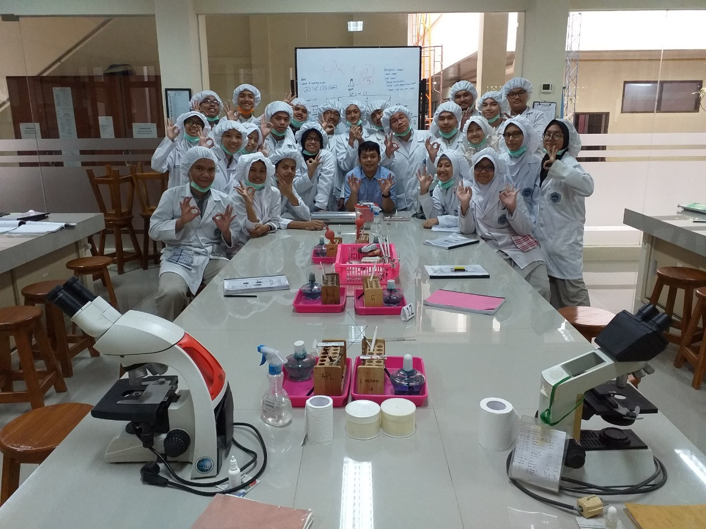
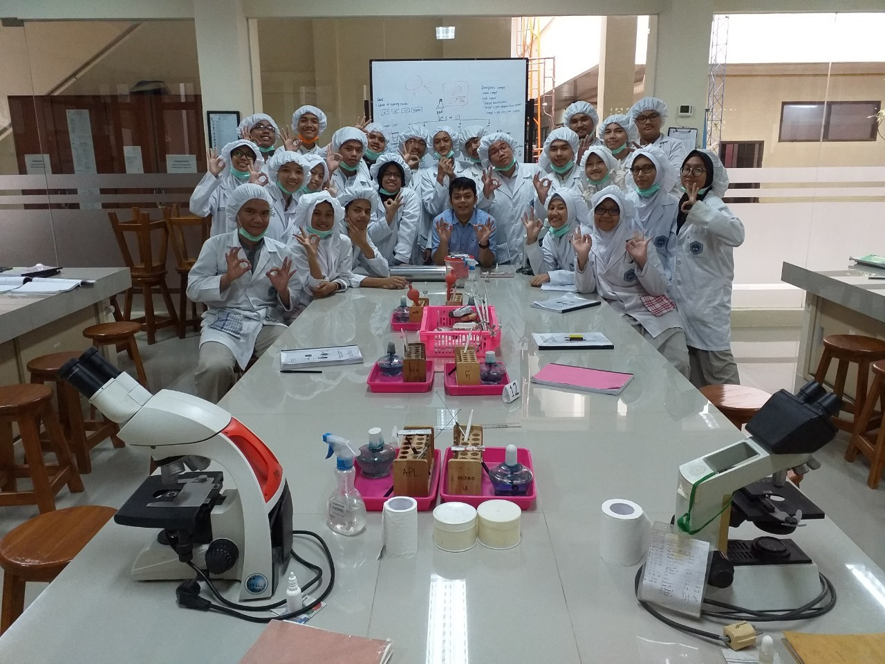

Saya adalah anak ke 4 dari 5 bersaudara dikeluarga saya. Saya memiliki 3 orang kakak dan satu orang adik. Keluarga saya tinggal di Cigombong,namun ke tiga kaka saya tinggal di Tangerang dan Cilegon. Ini adalah foto saya bersama keluarga saya

Saya mempunyai motto hidup "Jaga apa yang membuat kita senang,tinggalkan apa yang membuat kita sedih", maksudnya dalam hidup saya banyak sekali hal yang membuat saya senang dan itu membuat hidup saya bahagia maka harus saya jaga semua hal itu,namun sebaliknya apa bila hal yang membuat saya sedih saya harus meningglakan karena hanya akan jadi beban saja bagi saya.

Saya sekarang bersekolah di SMK-SMAK Bogor, dengan jurusan kompetensi kimia analisis. Berikut daftar riwayat pendidikan saya
| Sekolah | Tahun |
|---|---|
| TK mustika bangsa | 2007-2008 |
| SDN Cibogo | 2008-2014 |
| SMPN 1 Cigombong | 2014-2017 |
| SMK-SMAK Bogor | 2017-sekarang |
Sekarang saya bersekolah di SMK-SMAK Bogor sudah kelas 11. Awalnya saya masuk SMAKBO karena direkomendasikan oleh guru saya ketika SMP. Awalnya saya sulit beradaptasi dengan tugas yang setiap hari hampir selalu ada. Dulu kelas saya kelas 10-5 dengan wali kelas ibu Nur hidayati kemudian saya naik ke kelas 11,yaitu 11-7 dengan wali kelas Bapak Suparlan, namun ketika semester genap saya dipindahkan ke kelas PSG(Program Sistem Ganda),dimana kelas ini adalah kelas pertama yang menjadi pioneer untuk sistem PSG ini,dengan wali kelas ibu Sri purwanti
Ini adalah foto saya ketika kelas 10,11,dan kelas PSG
 

Hobi saya banyak,tetapi saya sangat menyenangi bermain bola atau bermain futsal. Karena dari olahraga ini mengajarkan saya apa itu artinya kerjasama,pantang menyerah dan tentu saja bagaimana menghilangkan penat dengan hal yang bermanfaat.Beragam manfaat bermain bola bisa dibaca disini.
Posisi favorit saya adalah penjaga gawang,(GoalKeeper). Ya betul penjaga gawang,seorang pemain yang menjadi benteng terakhir pertahanan suatu tim, kebanyakan pemain bola berkeinginan untuk mecetak gol,tapi untuk seorang kiper berkeinginan untuk menggagalkan gol tersebut. kiper adalah seorang pemain ketika menang dilupakan dan ketika kalah selalu disalahkan
dibawah ini adalah foto saya bersama tim futsal saya
Karya saya adalah membuat gambar bergerak dari logo salah satu klub sepakbola Prancis yaitu Paris Saint Germain(PSG). Ya mungkin kurang bagus bahkan mungkin tidak bagus, tapi saya mengerjakan ini dengan susah susah hese kwkwkwkw. Karya ini saya buat untuk memenuhi tugas komputer di SMAKBO.
ini saya bersama tokoh saya yang idolakan yaitu seorang pemimpin bernama Kim Jong Un,dia sangat keren dan karena dia saya bercita-cita menjadi seorang presiden. Dia merupakan presiden dari negara Korea utara,dimana menjadi negara satu satunya yang mengasingkan diri dari kehidupan internasional. Namun kini dimasa pemerintahan kim jong un korut mulai membuka kerja sama internasional,seperti mulai terlihatnya titik damai dengan korea selatan setelah sekian lama terjadi ketegangan yang tidak berakhir,kemudian mulai berdamai juga dengan Negri Paman Sam yang dipimpin oleh Donald trump.Dengan dilakukannya denuklirisasi oleh korut yang mengakibatkan berkurangnya ketegangan di semenanjung korea. Respect!!!!